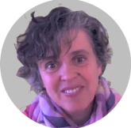

Nathalie GODIER
Accompagnement Psychologique Bienveillant
Grâce à la visioconference je vous apporte un soutien empathique dans vos difficultés ou que vous soyez.
Les oiseaux blessés ou épuisés, ont besoin d’un refuge pour se soigner et récupérer des forces avant de poursuivre leur voyage.